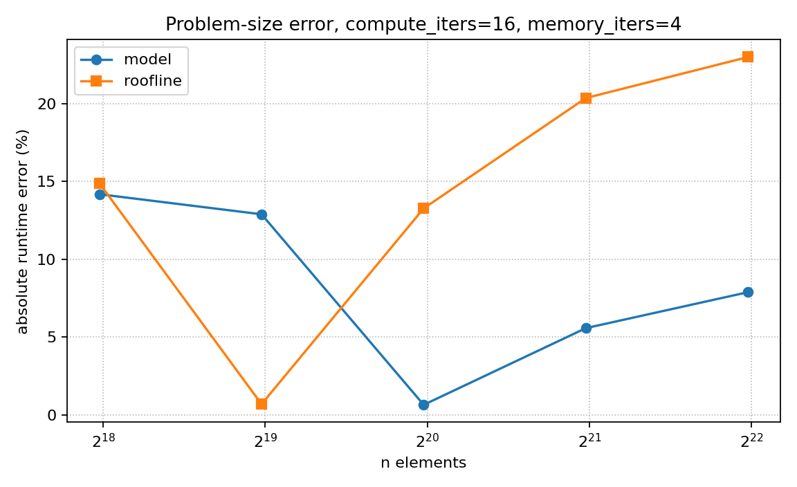
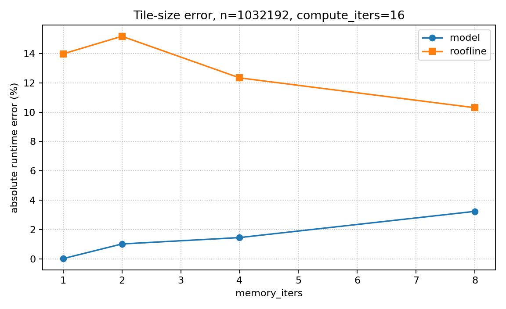
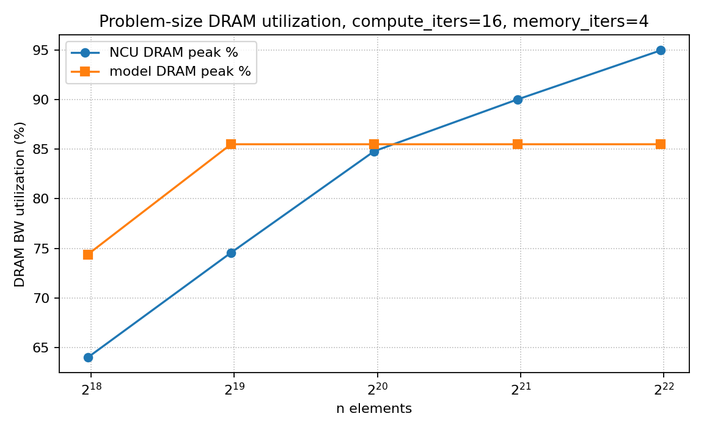
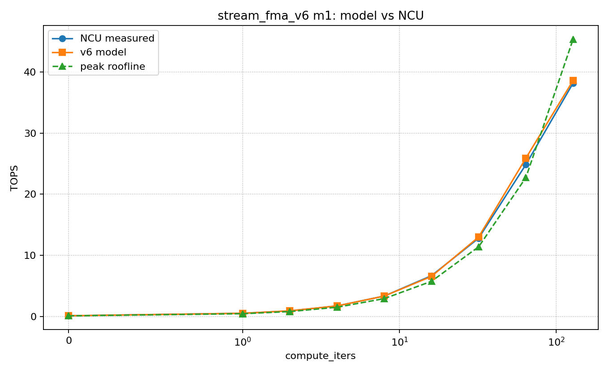
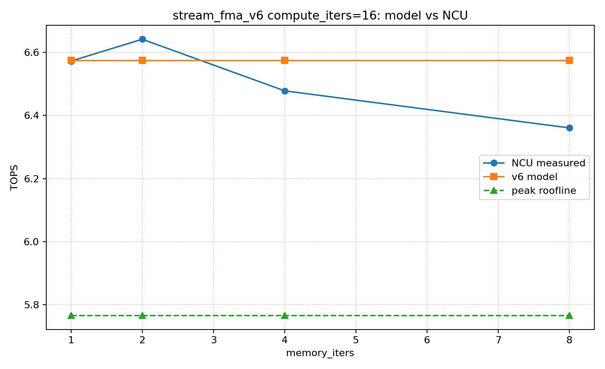
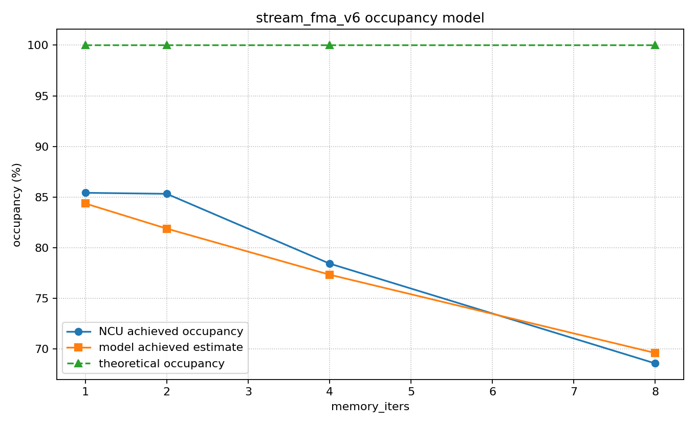
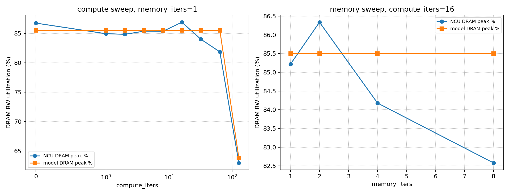
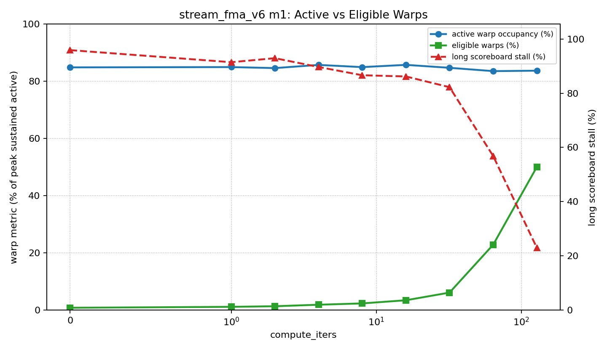
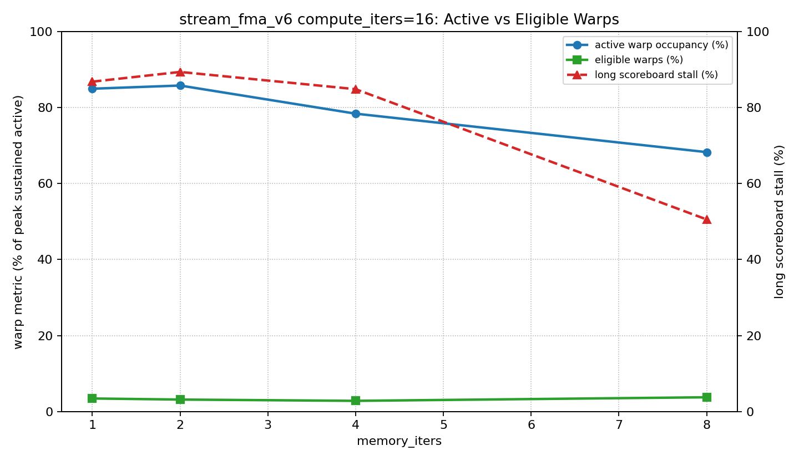
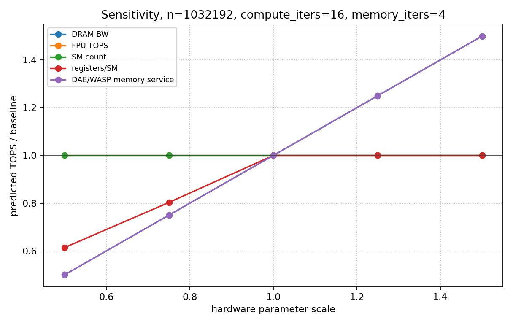

The kernel is a streaming FMA microbenchmark. FMA means fused multiply-add: fmaf(a, b, c) computes a * b + c as one fused FP32 instruction. In this report, one FMA instruction is counted as 2 floating-point operations because it performs one multiply and one add.
Each CTA owns a contiguous tile of blockDim.x * memory_iters elements. Each thread loads memory_iters elements from three input arrays, applies a repeated FMA chain, and stores memory_iters output values. This creates a simple load-compute-store structure that is useful for studying how streaming DRAM traffic overlaps with scalar FP32 execution.
The core indexing is:
block_base = blockIdx.x * blockDim.x * MemoryIters;
idx[m] = block_base + m * blockDim.x + threadIdx.x;The load phase computes one global index per element handled by the thread. For each m, all lanes in a warp access consecutive locations, so the loads from a[idx[m]], b[idx[m]], and c[idx[m]] are coalesced. The loaded values are kept in per-thread registers as acc[m], x[m], and y[m].
for (int m = 0; m < MemoryIters; ++m) {
idx[m] = block_base + m * blockDim.x + threadIdx.x;
acc[m] = a[idx[m]];
x[m] = b[idx[m]];
y[m] = c[idx[m]];
}The compute phase repeatedly updates the loaded register values. For each element and each compute_iters step, the kernel executes 3 FMA instructions, or 6 FP32 operations. This phase does not load more global data, so increasing compute_iters increases arithmetic intensity while keeping the same logical element stream.
for (int r = 0; r < compute_iters; ++r) {
for (int m = 0; m < MemoryIters; ++m) {
acc[m] = fmaf(acc[m], 1.0001f, x[m]);
x[m] = fmaf(x[m], 0.9999f, y[m]);
y[m] = fmaf(y[m], 1.0003f, acc[m]);
}
}The store phase writes one output value for every element loaded by the thread. The output combines the final accumulator streams, so each logical element has 3 input loads and 1 output store at the algorithm level.
for (int m = 0; m < MemoryIters; ++m) {
out[idx[m]] = acc[m] + x[m] + y[m];
}compute_iters is the main arithmetic-intensity knob. Larger values add more FMA work per loaded element, push the kernel toward the compute-bound region, and reduce the fraction of runtime explained by DRAM bandwidth.
memory_iters is the per-thread batching knob. Larger values make each thread load, compute, and store more elements, which reduces CTA count for a fixed n, increases register pressure, and changes achieved occupancy and latency hiding. The full-tile rule is n % (threads_per_cta * memory_iters) == 0, so every launched thread has valid work.
Inputs are n, compute_iters, memory_iters, threads_per_cta, FP32 TOPS, DRAM bandwidth, SM count, register-file size, and warp/CTA limits.
The required model outputs are performance in TOPS and achieved operational intensity. TOPS means tera-operations per second. Operational intensity means operations per byte.
elements_per_cta = threads_per_cta * memory_iters
ctas = n / elements_per_cta
ops = n * (6 * compute_iters + 2)
algorithm_bytes = n * 16
OI_algorithm = ops / algorithm_bytes
modeled_dram_bytes = n * dram_bytes_per_element
OI_dram = ops / modeled_dram_bytes
compute_time = ops / effective_fpu_ops_per_s
dram_time = modeled_dram_bytes / effective_dram_bytes_per_s
time = max(compute_time, dram_time)
TOPS = ops / time / 1e12ops is the total FP32 operation count. The term 6 * compute_iters comes from 3 FMA instructions per element per compute iteration, with 2 operations per FMA. The + 2 term is the final output add chain, acc + x + y.
algorithm_bytes is the logical traffic from the CUDA source: 3 FP32 loads and 1 FP32 store per element, or 16 B/element. modeled_dram_bytes is the NCU-calibrated DRAM traffic used by the bottleneck model. It is lower here because NCU reports this kernel as mostly read-dominated DRAM traffic.
Example for n=1032192, compute_iters=16, memory_iters=4:
ctas = 1032192 / (256 * 4) = 1008
OI_algorithm = (6 * 16 + 2) / 16 = 6.125 ops/byteThe extended outputs explain why the kernel reaches a particular TOPS value. They are not required by the mini-project statement, but they make the model useful for architecture analysis.
resident_ctas_per_sm = min(CTA limit, warp limit, register limit, shared-memory limit)
resident_warps_per_sm = resident_ctas_per_sm * warps_per_cta
estimated_achieved_occupancy = estimated_active_warps_per_sm / max_warps_per_sm
predicted_dram_gbps = modeled_dram_bytes / time / 1e9
dram_utilization_pct = predicted_dram_gbps / peak_dram_gbps * 100
bottleneck = compute if compute_time >= dram_time else dramWarp occupancy estimates how many warps are active on each SM relative to the hardware maximum. The model first computes the theoretical resident warps from CTA, warp, register, and shared-memory limits, then applies a wave-drain factor for small grids. Register counts come from cuobjdump: 12, 20, 36, and 40 registers/thread for memory_iters=1,2,4,8.
DRAM utilization predicts how much of peak DRAM bandwidth the kernel uses. It is computed from the modeled DRAM bytes divided by the predicted runtime, then normalized by the hardware peak DRAM bandwidth.
Tuned constants are small and physical. Scalar-FMA efficiency captures that this kernel does not reach the ideal CUDA-core peak. The model uses 12 DRAM bytes per element because NCU reports mostly read DRAM traffic for this kernel. DRAM efficiency captures sustained streaming bandwidth. A wave-drain factor accounts for reduced average occupancy when the grid exposes fewer CTA waves.
effective_fpu_ops_per_s is fpu_tops * compute_efficiency * 1e12. It is the scalar FP32 compute rate available to this kernel after accounting for instruction mix and issue efficiency. effective_dram_bytes_per_s is dram_bw_gbps * dram_efficiency * occupancy_bw_scale * 1e9. It is the sustained DRAM service rate available to this streaming access pattern.
dram_bytes_per_element is the calibrated DRAM traffic per element. dram_efficiency captures the gap between peak DRAM bandwidth and the sustained bandwidth reached by this coalesced streaming kernel. occupancy_bw_scale reduces effective bandwidth when too few active warps are available to hide memory latency.
The main challenge is that algorithm bytes are 16 B/element, but NCU DRAM bytes are closer to 12 B/element. I address this by reporting algorithm OI separately from the NCU-like modeled DRAM traffic. The DRAM utilization submodel uses the same predicted runtime as the bottleneck model, so utilization falls naturally when the kernel becomes compute-bound.
Validation used actual NCU measurements on the RTX 5080. The model remains parameterized, so TitanV values can be substituted later.
Parameter sweeps:
MAPE means Mean Absolute Percentage Error. It is computed as (100 / N) * sum(abs((predicted_i - measured_i) / measured_i)); lower is better. Rows with zero or invalid measured values are excluded.
Problem-size runtime MAPE:
Tile-size runtime MAPE:
DRAM BW utilization MAPE:







| n | CTAs | measured TOPS | model TOPS | NCU DRAM peak % | model DRAM peak % | model error % | roofline error % |
|---|---|---|---|---|---|---|---|
| 258048 | 252 | 4.909 | 5.719 | 63.99 | 74.39 | -14.17 | -14.88 |
| 516096 | 504 | 5.727 | 6.574 | 74.56 | 85.50 | -12.88 | -0.69 |
| 1032192 | 1008 | 6.531 | 6.574 | 84.80 | 85.50 | -0.65 | 13.26 |
| 2064384 | 2016 | 6.940 | 6.574 | 90.02 | 85.50 | 5.57 | 20.35 |
| 4128768 | 4032 | 7.092 | 6.574 | 94.97 | 85.50 | 7.88 | 22.98 |
| memory_iters | CTAs | measured TOPS | model TOPS | NCU DRAM peak % | model DRAM peak % | measured occ % | model occ % |
|---|---|---|---|---|---|---|---|
| 1 | 4032 | 6.572 | 6.574 | 85.22 | 85.50 | 84.81 | 84.36 |
| 2 | 2016 | 6.641 | 6.574 | 86.34 | 85.50 | 85.55 | 81.88 |
| 4 | 1008 | 6.478 | 6.574 | 84.18 | 85.50 | 77.26 | 77.33 |
| 8 | 504 | 6.360 | 6.574 | 82.58 | 85.50 | 68.42 | 69.60 |
Active warp occupancy is the percentage of resident active warps on the SM, including stalled warps. Eligible warps are active warps that are ready to issue an instruction at the scheduler. Long scoreboard stall is the fraction of warp issue stall attributed to long-latency dependencies, commonly global-memory dependencies.
In the compute sweep, active occupancy stays high while eligible warps rise as compute_iters increases. This means the SM has many resident warps even at low compute_iters, but most of them are not ready to issue because long scoreboard stalls dominate. In the memory sweep, changing memory_iters changes CTA count and register pressure, so active occupancy and eligible readiness move together with the amount of per-thread batching.

| compute_iters | GFLOP/s | active occ % | eligible % | eligible warps/SMSP cycle | long scoreboard % |
|---|---|---|---|---|---|
| 0 | 137.3 | 84.88 | 0.85 | 0.10 | 95.88 |
| 1 | 544.4 | 84.98 | 1.17 | 0.14 | 91.43 |
| 2 | 954.7 | 84.63 | 1.38 | 0.17 | 92.91 |
| 4 | 1769.3 | 85.74 | 1.91 | 0.23 | 89.66 |
| 8 | 3353.0 | 84.97 | 2.37 | 0.28 | 86.62 |
| 16 | 6613.2 | 85.76 | 3.47 | 0.42 | 86.17 |
| 32 | 13064.0 | 84.73 | 6.15 | 0.74 | 82.22 |
| 64 | 25255.2 | 83.57 | 22.90 | 2.75 | 56.84 |
| 128 | 38507.2 | 83.72 | 50.06 | 6.01 | 23.00 |

| memory_iters | GFLOP/s | active occ % | eligible % | eligible warps/SMSP cycle | long scoreboard % |
|---|---|---|---|---|---|
| 1 | 6669.0 | 85.00 | 3.41 | 0.41 | 86.86 |
| 2 | 6490.9 | 85.84 | 3.13 | 0.38 | 89.42 |
| 4 | 6531.2 | 78.43 | 2.79 | 0.33 | 84.88 |
| 8 | 6386.0 | 68.30 | 3.73 | 0.45 | 50.57 |
The model performs well across memory-bound settings because it captures the effective DRAM traffic and streaming bandwidth. The peak roofline is less accurate: it is pessimistic in the memory-bound region because it uses algorithm bytes, and optimistic at high compute_iters because it assumes ideal scalar FMA throughput. The weakest model points are the smallest problem sizes, where launch and wave-drain effects dominate, and the largest problem sizes, where measured DRAM bandwidth rises above the single calibrated bandwidth.
The sensitivity analysis scales hardware parameters around the measured configuration for n=1032192, compute_iters=16, memory_iters=4.

This kernel is primarily a streaming memory-service workload until compute_iters becomes very large. Future GPUs or DAE/WASP-like architectures should improve:
Increasing FPU TOPS helps mostly after the kernel reaches the compute-bound region. For the DAE/WASP direction, the most useful feature is better overlap of loads with scalar FMA work, because the workload has simple coalesced streams and little algorithmic L1/L2 reuse.